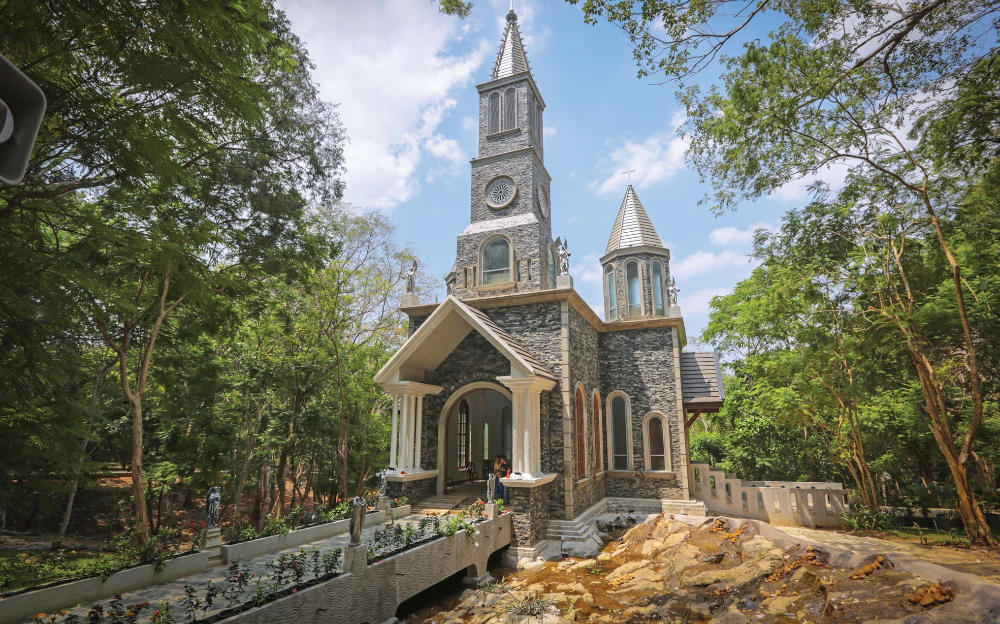

Basilica of Our Lady of Lanka – Tewatte

National Catholic shrine of Sri Lanka
Very peaceful and spiritual atmosphere
Popular pilgrimage site for locals and foreigners
St. Anthony’s Shrine – Kochchikade (Colombo)

One of the most visited Catholic shrines in Sri Lanka
Devotees believe in miracles of St. Anthony
Located near Colombo city